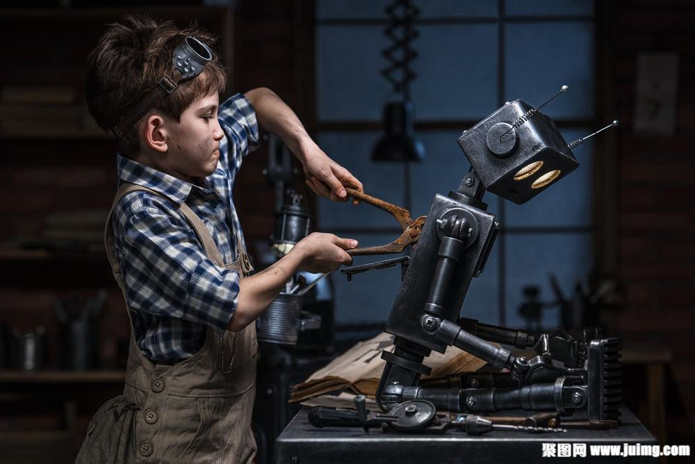

La cultura Maker (hacedor) es un movimiento contemporáneo que surge como extensión de la cultura DIY (do it yourself/hágalo usted mismo). Esta se basa en la idea de que toda persona es capaz de construir o solucionar un problema con tecnología empoderándola y permitiéndole acceder al conocimiento abierto que se genera en comunidad, por lo tanto la capacidad de innovar con tecnología ya no solo es inherente a los grandes fabricantes y compañías multinacionales, sino le pertenece a todos.
Este movimiento surgió gracias a la aparición de herramientas digitales de diseño y fabricación, por la reducción de costos de los equipos de producción (impresora 3D, cortadora láser, etc.); por la participación colectiva en plataformas sociales (redes de código abierto, micromecenazgo) y por la creciente aparición de más espacios de co-construcción en formato abierto. Estos espacios son conocidos generalmente como makerspaces.

¿Qué es un makerspace?
Un makerspace es un espacio de trabajo colaborativo en donde se realizan actividades de exploración, diseño y fabricación de productos físicos a escala personal/ local y que, por lo general, son creados para resolver un problema o atender una necesidad en concreto. Usualmente los makerspaces poseen una identidad y sus actividades se desarrollan en torno a una temática o contexto puntual, por lo que pueden estar provistos de equipos de fabricación digital (impresora 3D, cortadora láser, fresadora CNC, p.e.) u otras herramientas necesarias para cumplir su misión.
Cultura Maker y tecnología
Quizás el mayor exponente de la Cultura Maker dentro de la tecnología sea Arduino, algo de lo que hablamos mucho en este blog. También con circuitos, programación y electrónica podemos crear tecnología nosotros mismos.
Gracias al open hardware y el open software, somos capaces de crear tecnología y no ser unos meros consumidores.
La Cultura Maker y la tecnología, son dos términos que se gustan y dan rienda suelta a nuestras ideas y proyectos. Un ejemplo lo podemos ver con losdispositivos del IoT o Internet of Things.
El Movimiento Maker y el IoT
Sin duda alguna, si hay algún movimiento que puede impulsar el IoT, ese será la Cultura Maker. Gracias al abaratamiento de la tecnología y, lo más importante, la eliminación de barreras, la tecnología ya no avanza de la mano de las grandes empresas.
Además de Arduino, existen otros ejemplos donde podemos ver que el IoT será una realidad y algo cotidiano en nuestro día a día. Poder incorporar un procesador a prácticamente cualquier cosa y no solo eso. Hace unos años, añadir conectividad a un objeto era caro. Hoy en día, gracias al ESP8266, podemos hacerlo por menos de 3€.
Lo mismo que está ocurriendo con la Computación Física en la Cultura Maker, está ocurriendo con el IoT dentro del movimiento. La eliminación de barreras
de acceso ha convertido a esta placa microcontroladora en el máximo exponente en este área.
IoT la tecnología del futuro
Cuando realmente seamos capaces de ver el IoT en nuestro día a día, será cuando las iniciativas de Smart Cities (Ciudades Inteligentes) sean una realidad. Mezclar datos obtenidos de nuestras ciudades, ya sean abiertos o cerrados, y que se integren con automatizaciones, es el gran reto del futuro.
Disponer de cruces de semáforos inteligentes, sistema de riego automáticos o gestión de alumbrado público automatizado. Estos son solo algunos retos del futuro para el IoT y para la Cultura Maker. Uno de los congresos más importantes
a nivel mundial se celebra en Barcelona, el Smart City Congres. Es un referente y pretende mostrar los avances tecnológicos en esta materia.